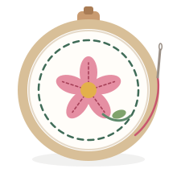

Toutes mes broderies
Images
Trier
Les plus récentes
Par nom (A → Z)
Les plus grandes
Les plus petites
Le moins de couleurs
Afficher plus de broderies

Votre collection est vide
Choisir des fichiers
Choisir un dossier
Retour
Lin
Blanc
Noir
Impossible d'afficher ce motif.
Voir la broderie se faire
Lent
Normal
Rapide
Ajout des broderies…
Recherche des fichiers…
0
ajoutées
0
doublons retirés
0
autres fichiers ignorés
Voir les doublons
Fichiers avec un problème
Très bien
Non, garder
Oui, supprimer
Lâchez vos broderies ici
Fichiers, dossiers ou .zip — les doublons seront retirés